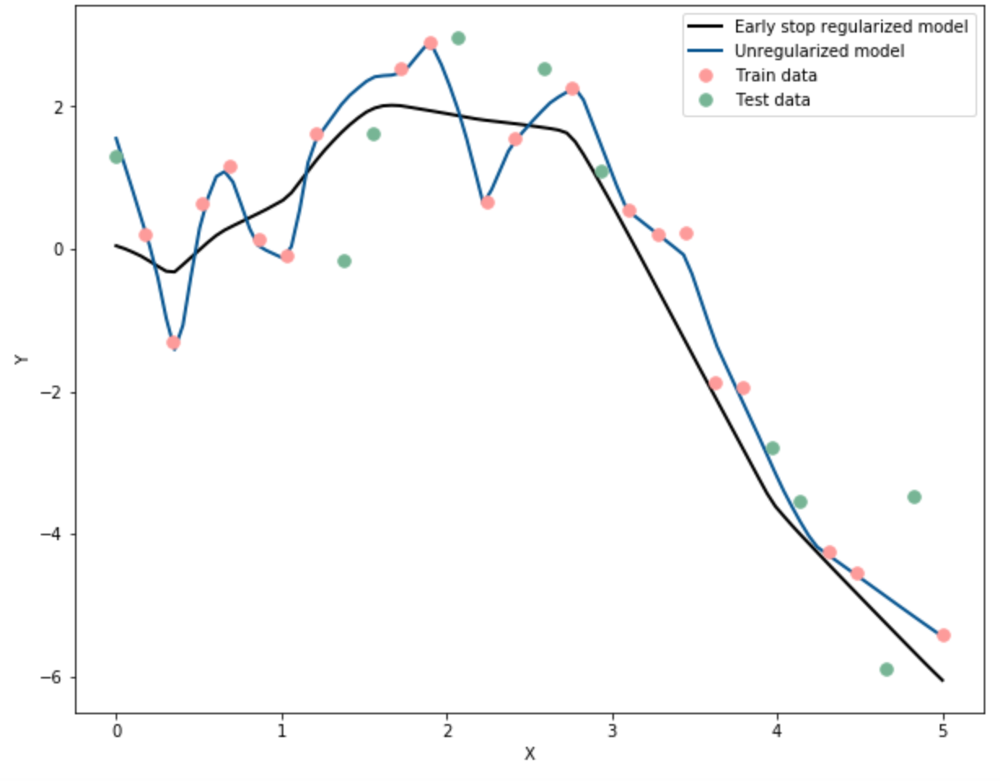

Key Word(s): Regularization, Neural Networks, Data Augmentation, Weight Decay, Dropout

NOTE: This graph is only a sample.
Instructions:¶
- Generate the predictor and response data using the helper code given.
- Split the data into train and test sets.
- Visualise the split data using the helper code.
- Build a simple neural network with 5 hidden layers with 100 neurons each with the given pre-trained weights. This network has no regularization.
- Compile the model with MSE as the loss.
- Fit the model on the training data and save the history.
- Use the helper code to visualise the MSE of the train and test data with respect to the epochs.
- Predict on the entire data.
- Use the helper function to plot the predictions along with the generated data.
- Repeat steps 4 to 8 by building the same neural network with early stopping.
- The last plot will consist of the predictions of both the neural networks. The graph will look similar to the one given above.
Hints:¶
Use the Dense layer to regularize using l2 and l1 regularization. More details can be found here.
tf.keras.sequential() : A sequential model is for a plain stack of layers where each layer has exactly one input tensor and one output tensor.
tf.keras.optimizers() : An optimizer is one of the two arguments required for compiling a Keras model
model.add() : Adds layers to the model.
model.compile() : Compiles the layers defined into a neural network
model.fit() : Fits the data to the neural network
model.predict() : Used to predict the values given the model
history() : The history object is returned from calls to the fit() function used to train the model. Metrics are stored in a dictionary in the history member of the object returned.
tf.keras.regularizers.L2() : A regularizer that applies a L2 regularization penalty.
# Import the necessary libraries
import numpy as np
import pandas as pd
import matplotlib.pyplot as plt
import warnings
warnings.filterwarnings("ignore")
import tensorflow as tf
np.random.seed(0)
tf.random.set_seed(0)
from tensorflow.keras import layers
from tensorflow.keras import models
from tensorflow.keras import optimizers
from tensorflow.keras.models import load_model
from tensorflow.keras import regularizers
from sklearn.metrics import mean_squared_error
from tensorflow.keras.models import load_model
from sklearn.model_selection import train_test_split
%matplotlib inline
# Use the helper code below to generate the data
# Defines the number of data points to generate
num_points = 30
# Generate predictor points (x) between 0 and 5
x = np.linspace(0,5,num_points)
# Generate the response variable (y) using the predictor points
y = x * np.sin(x) + np.random.normal(loc=0, scale=1, size=num_points)
# Generate data of the true function y = x*sin(x)
# x_b will be used for all predictions below
x_b = np.linspace(0,5,100)
y_b = x_b*np.sin(x_b)
# Split the data into train and test sets with .33 and random_state = 42
x_train, x_test, y_train, y_test = train_test_split(x, y, test_size=0.33, random_state=42)
# Helper code to plot the generated data
# Plot the train data
plt.rcParams["figure.figsize"] = (10,8)
plt.plot(x_train,y_train, '.', label='Train data', markersize=15, color='#FF9A98')
# Plot the test data
plt.plot(x_test,y_test, '.', label='Test data', markersize=15, color='#75B594')
# Plot the true data
plt.plot(x_b, y_b, '-', label='True function', linewidth=3, color='#5E5E5E')
# Set the axes labels
plt.xlabel('X')
plt.ylabel('Y')
plt.legend()
plt.show()
# Building an unregularized NN.
# Initialise the NN, give it an appropriate name for the ease of reading
# The FCNN has 5 layers, each with 100 nodes
model_1 = models.Sequential(name='Unregularized')
# Add 5 hidden layers with 100 neurons each
model_1.add(layers.Dense(100, activation='tanh', input_shape=(1,)))
model_1.add(layers.Dense(100, activation='relu'))
model_1.add(layers.Dense(100, activation='relu'))
model_1.add(layers.Dense(100, activation='relu'))
model_1.add(layers.Dense(100, activation='relu'))
# Add the output layer with one neuron
model_1.add(layers.Dense(1, activation='linear'))
# View the model summary
model_1.summary()
# Load with the weights already provided for the unregularized network
model_1.load_weights('weights.h5')
# Compile the model
model_1.compile(loss='MSE',optimizer=optimizers.Adam(learning_rate=0.001))
# Use the model above to predict for x_b (used exclusively for plotting)
y_pred = model_1.predict(x_b)
# Use the model above to predict on the test data
y_pred_test = model_1.predict(x_test)
# Compute the MSE on the test data
mse = mean_squared_error(y_test,y_pred_test)
# Use the helper code to plot the predicted data
plt.rcParams["figure.figsize"] = (10,8)
plt.plot(x_b, y_pred, label = 'Unregularized model', color='#5E5E5E', linewidth=3)
plt.plot(x_train,y_train, '.', label='Train data', markersize=15, color='#FF9A98')
plt.plot(x_test,y_test, '.', label='Test data', markersize=15, color='#75B594')
plt.xlabel('X')
plt.ylabel('Y')
plt.legend()
plt.show()
Implement previous NN with early stopping¶
For early stopping we build the same network but then we implement early stopping using callbacks.
# Building an unregularized NN with early stopping.
# Initialise the NN, give it an appropriate name for the ease of reading
# The FCNN has 5 layers, each with 100 nodes
model_2 = models.Sequential(name='EarlyStopping')
# Add 5 hidden layers with 100 neurons each
# tanh is the activation for the first layer
# relu is the activation for all other layers
model_2.add(layers.Dense(100, activation='tanh', input_shape=(1,)))
model_2.add(layers.Dense(100, activation='relu'))
model_2.add(layers.Dense(100, activation='relu'))
model_2.add(layers.Dense(100, activation='relu'))
model_2.add(layers.Dense(100, activation='relu'))
# Add the output layer with one neuron
model_2.add(layers.Dense(1, activation='linear'))
# View the model summary
model_2.summary()
# Use the keras early stopping callback with patience=10 while monitoring the loss
callback = ___
# Compile the model with MSE as loss and Adam optimizer with learning rate as 0.001
___
# Save the history about the model after fitting on the train data
# Use 0.2 validation split with 1500 epochs and batch size of 10
# Use the callback for early stopping here
history_2 = ___
# Helper function to plot the data
# Plot the MSE of the model
plt.rcParams["figure.figsize"] = (10,8)
plt.title("Early stop model")
plt.semilogy(history_2.history['loss'], label='Train Loss', color='#FF9A98', linewidth=2)
plt.semilogy(history_2.history['val_loss'], label='Validation Loss', color='#75B594', linewidth=2)
plt.legend()
# Set the axes labels
plt.xlabel('Epochs')
plt.ylabel('Log MSE Loss')
plt.legend()
plt.show()
# Use the early stop implemented model above to predict for x_b (used exclusively for plotting)
y_early_stop_pred = ___
# Use the model above to predict on the test data
y_earl_stop_pred_test = ___
# Compute the test MSE by predicting on the test data
mse_es = ___
# Use the helper code to plot the predicted data
# Plotting the predicted data using the L2 regularized model
plt.rcParams["figure.figsize"] = (10,8)
plt.plot(x_b, y_early_stop_pred, label='Early stop regularized model', color='black', linewidth=2)
# Plotting the predicted data using the unregularized model
plt.plot(x_b, y_pred, label = 'Unregularized model', color='#005493', linewidth=2)
# Plotting the training data
plt.plot(x_train,y_train, '.', label='Train data', markersize=15, color='#FF9A98')
# Plotting the testing data
plt.plot(x_test,y_test, '.', label='Test data', markersize=15, color='#75B594')
# Set the axes labels
plt.xlabel('X')
plt.ylabel('Y')
plt.legend()
plt.show()
Mindchow 🍲¶
After marking change the patience parameter once to 2 and once to 100 in the early stopping callback with the same data. Do you notice any change? While value is more efficient?